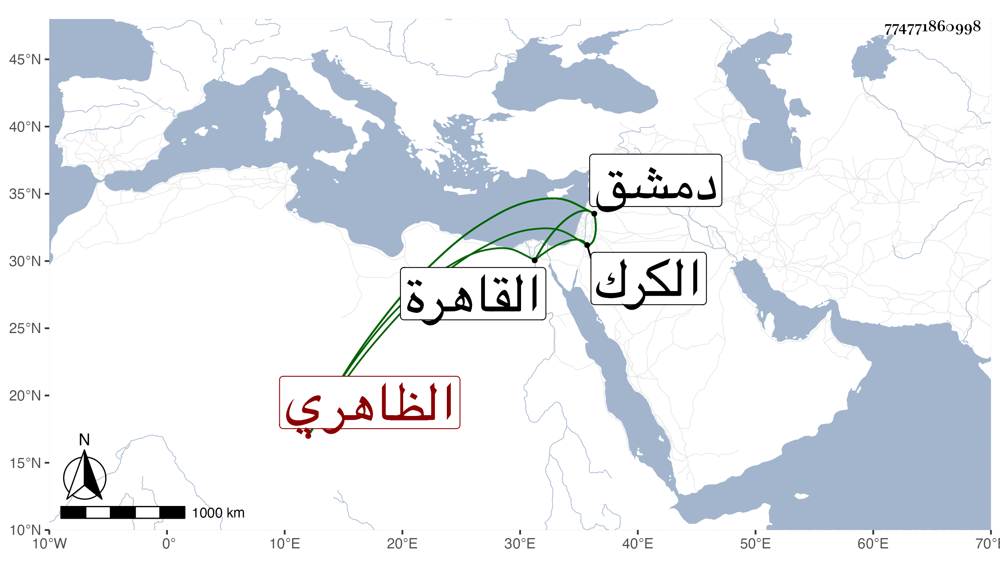

0902Sakhawi.DawLamic.ITO20230111-ara1.EIS1600.774771860998
Biography ID: 774771860998
1071
سودون الظاهري برقوق ويعرف بسودون الظريف . ترقى في أيام أستاذه حتى ولي نيابة الكرك في سنة إحدى ، فلما توجه الناصر إلى دمشق في التي تليها قدم عليه فصرفه عنها ، ثم تنقلت به الأحوال إلى حجوبية دمشق ثم قبض عليه شيخ وسجنه بالصبيبة ثم أفرج عنه وأعطاه إمرة بدمشق ، ثم قبضه وحبسه كذلك إلى أن أفرج عنه الناصر وأنعم عليه بامرة القاهرة إلى أن قبض عليه وحبسه ثم وسط في رجب سنة أربع وعشرين تحت قلعة الجبل .
